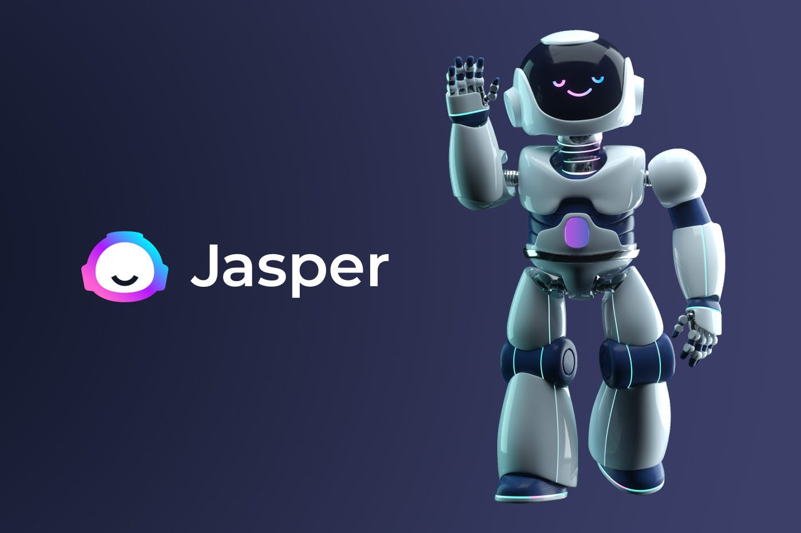
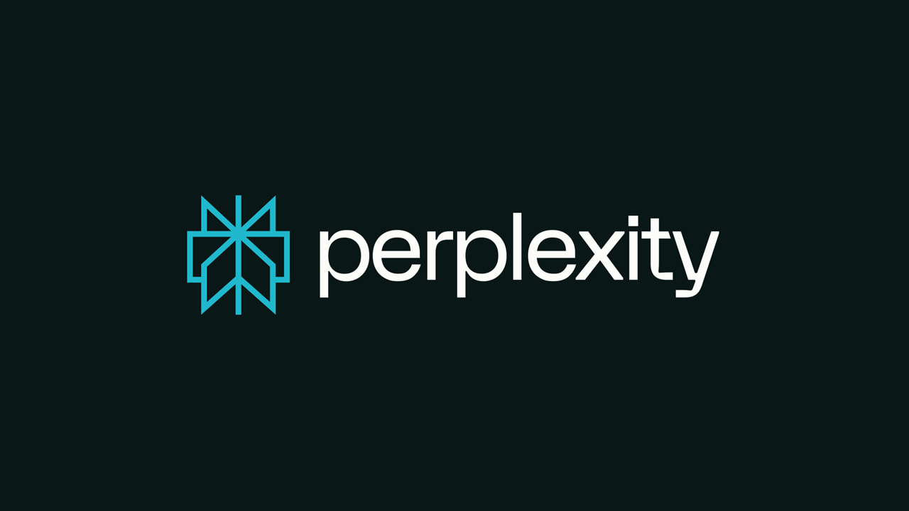
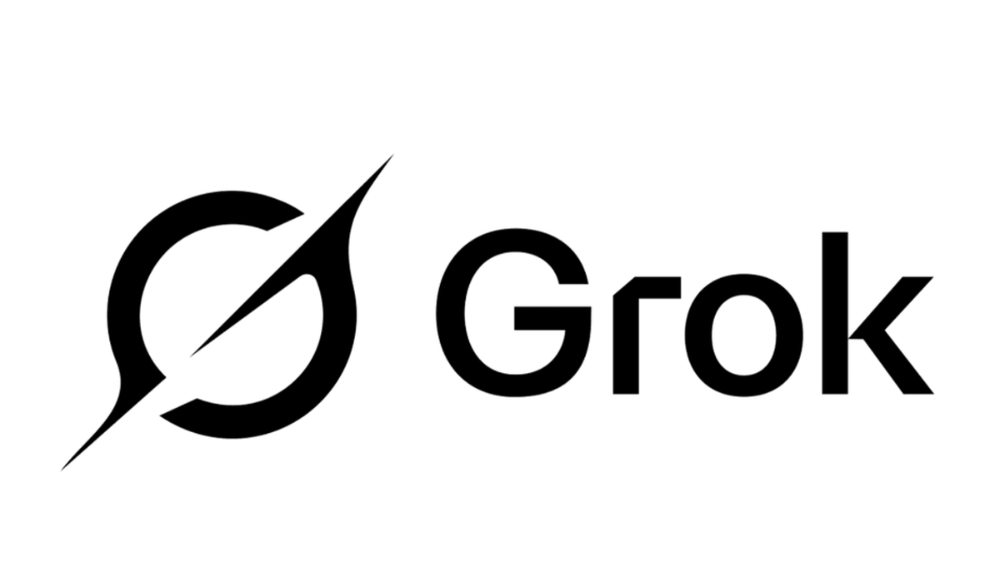

Text generator tools are a type of artificial intelligence (AI) that can create written content automatically. Instead of writing everything from scratch, users can type a prompt or a few instructions, and the AI will generate sentences, paragraphs, or even full articles.
These tools are widely used today for writing emails, essays, social media posts, and more. As they become more advanced, AI-generated text is becoming harder to distinguish from human writing.
How Text Generator Tools Work
Text generator tools are trained using large amounts of text from books, websites, and other sources. They learn patterns in language, such as grammar, sentence structure, and word usage.
When a user enters a prompt, the AI predicts what words should come next based on what it has learned. It continues this process to form complete and meaningful responses. Because of this, the AI does not “think” like a human. Instead, it generates text based on patterns and probabilities.
Common Features of Text Generator Tools
Most text generator tools include:
-
1
Prompt-based writing
Generate text from a short input
-
2
Text completion
Continue or finish sentences and paragraphs
-
3
Paraphrasing
Rewrite text in different words
-
4
Summarization
Shorten long content into key points
-
5
Grammar correction
Improve writing quality and clarity
Top Popular Text Generator Tools
1. ChatGPT
ChatGPT is one of the most widely used AI text generators. It can produce detailed and natural-sounding responses for many topics, including writing, coding, and answering questions.
It is known for its conversational style, making its responses feel more human. ChatGPT is also highly flexible. Users can ask it to rewrite content, explain complex topics, or create structured outputs such as lists, summaries, or step-by-step guides. Because of this versatility, it is commonly used by students, developers, content creators, and businesses.
2. Google Gemini

Google Gemini is an AI text generator developed by Google. It is designed to handle tasks like answering questions, summarizing information, and generating content.
It works well with Google services such as Google Drive, making it useful for productivity tasks like writing documents and organizing information. Gemini is also strong in handling factual and structured content. It is often used for research, explanations, and summarization tasks. Because of its connection to Google’s data systems, it can provide helpful and organized responses for everyday productivity.
3. Claude

Claude is an AI text generator known for producing clear, safe, and well-organized content. It is designed to handle long and complex writing tasks, making it especially useful for reports, essays, and detailed explanations.
One of its strengths is its ability to maintain structure and coherence in longer texts. It can process large amounts of information and generate responses that are easy to follow and logically arranged.
Claude is also focused on responsible AI use. It is designed to follow instructions carefully and avoid harmful or misleading outputs. Because of this, it is often used in professional environments, research tasks, and situations where accuracy and clarity are important.
4. Jasper AI

Jasper AI is a text generator focused mainly on marketing and business content creation. It helps users quickly generate blog posts, product descriptions, advertisements, and social media captions.
One of its key features is its use of templates. Users can choose specific formats, such as email campaigns or ad copy, and the AI will generate content based on those templates. This makes it especially useful for businesses and content creators who need consistent and structured output.
Jasper AI also allows users to adjust tone and style, making it easier to match a brand’s voice. Because of its focus on marketing, it is commonly used by companies, marketers, and entrepreneurs to produce content quickly and efficiently.
5. Perplexity AI

Perplexity AI is a text generator that functions as an AI-powered search engine. Instead of relying only on pre-trained knowledge, it searches the internet in real time and generates answers based on current information.
When a user asks a question, Perplexity collects information from multiple sources and combines them into a single, easy-to-understand response. It also provides citations or links to those sources, allowing users to verify the information.
6. Grok

Grok is an AI text generator developed by xAI, integrated with the platform X (formerly Twitter). It is designed to provide fast, real-time responses and is known for its unique and informal personality.
One of its main strengths is its access to live data. It can generate responses based on current events, trending topics, and information from social media, making it useful for staying updated.
Grok is also designed to be more expressive compared to other AI tools. It may include humor, casual language, or witty responses, which makes interactions feel more engaging and less formal.
Why People Use Text Generator Tools
People use text generator tools because they save time and effort. Writing can take a long time, especially for large or complex tasks, but AI tools can generate content quickly.
They are also useful for generating ideas, improving writing, and completing tasks more efficiently. These tools are widely used in education, business, marketing, and everyday communication.
Risks and Misuse
Even though text generator tools are useful, they can also be misused.
Some risks include:
- Spreading false or misleading information
- Generating content that looks real or convincing but is inaccurate
- Over-reliance on AI instead of human thinking
Since AI voices can sound very real, it can be difficult to tell if an audio clip is genuine or fake.
What We've Learned
Text generator tools are powerful AI technologies that can create written content quickly and easily. Tools like ChatGPT, Google Gemini, Claude, Jasper AI, Perplexity AI, and Grok offer different features for various needs, from casual writing to research and professional work.
While these tools are useful and accessible, they also come with risks, such as misinformation and misuse. By understanding how they work, you can better identify AI-generated text and make smarter decisions when reading or creating content online.
Text generator tools can create content that looks very real and convincing, but it is not always accurate. These tools may produce false information, incomplete answers, or made-up details without warning. Some content may also be copied or too similar to existing sources.